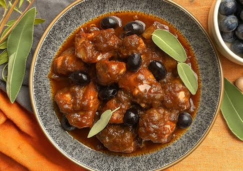

Home
Cinghiale alla cacciatora

Descrizione
Cinghiale alla cacciatora
Un piatto tradizionale della cucina italiana, ricco di sapore e profumi. Il cinghiale viene cotto lentamente con pomodoro, vino rosso, erbe aromatiche e spezie, fino a diventare tenero e succulento. Perfetto da gustare in compagnia durante le stagioni più fredde.
Ingredienti
- 1 kg di cinghiale a pezzi
- 400g di pomodori pelati
- 1 cipolla
- 2 spicchi d'aglio
- 1 bicchiere di vino rosso
- Olio extravergine d'oliva
- Rosmarino, salvia e alloro q.b.
- Sale e pepe q.b.
Preparazione
- In una casseruola, soffriggere cipolla e aglio tritati in olio extravergine d'oliva.
- Aggiungere i pezzi di cinghiale e rosolarli su tutti i lati.
- Sfumare con il vino rosso e lasciare evaporare.
- Aggiungere i pomodori pelati, le erbe aromatiche, sale e pepe.
- Cuocere a fuoco lento per almeno 2-3 ore, mescolando di tanto in tanto, fino a quando la carne sarà tenera.
- Servire caldo, accompagnato da polenta o contorni a piacere.